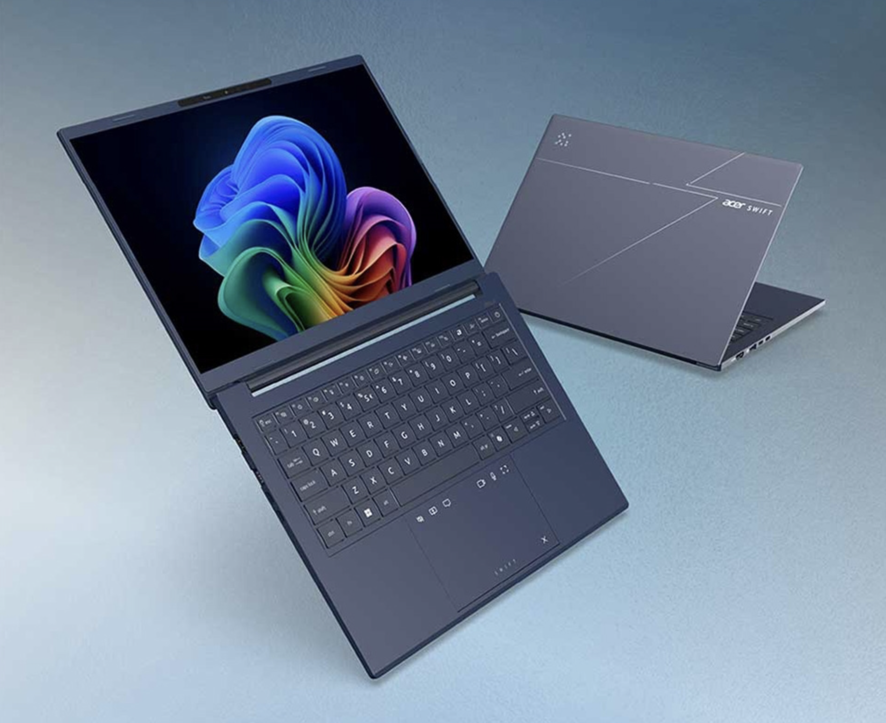
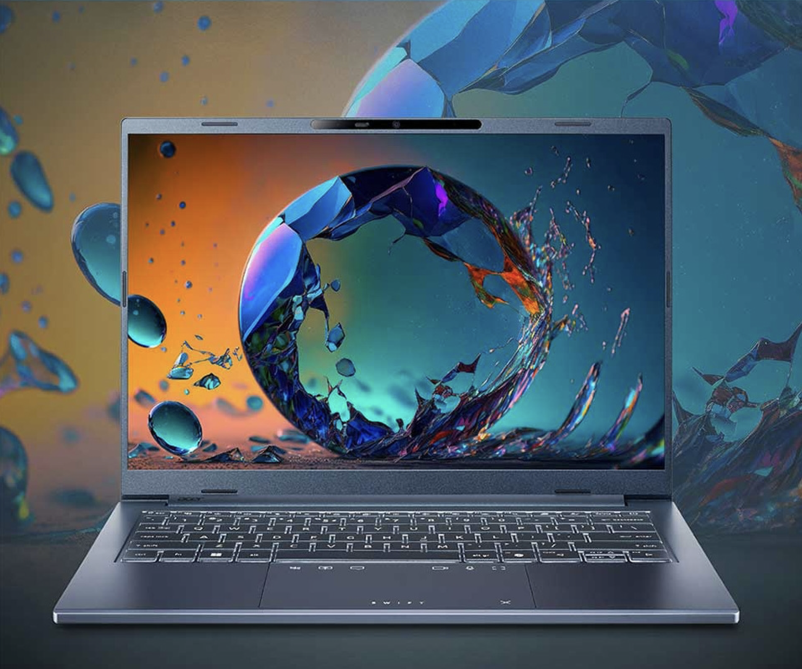
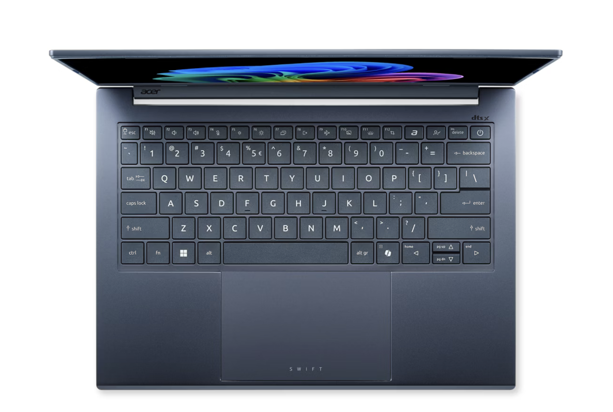

PC
PCMag
★★★★★ 5.0
"最輕薄的 AI 筆電之一，OLED 顯示令人驚艷，是 2025 年度推薦。"
鋁合金輕薄機身搭載 Intel Core Ultra 7 258V 處理器，14 吋 OLED 顯示，為創作者與商旅人士而生。
建議售價
NT$46,900




設計 03 — AI
Intel Core Ultra NPU 48 TOPS，AI 即時降噪、智慧電源管理、Copilot 本機運算，讓每一分鐘都更有效率。
了解 AI 功能 →規格深度解析
連接埠 — 左側
Thunderbolt 4 · USB-C · HDMI 2.1
Swift Go 14 AI · SFG14-75
連接埠 — 右側
USB-A × 2 · microSD · 3.5mm
Swift Go 14 AI · SFG14-75
三台 14 吋機型的重量，放在同一條從 0 起算的軸線上。差距是多少，就顯示多少。
實測續航 16 小時，越過 8 小時的一日工作基準線。
Thunderbolt 4、USB-C、HDMI 2.1 與雙 USB-A。滑過或點擊每個埠，查看它的規格。
48
TOPS AI 算力
16h
電池續航
1.39
kg 起
WUXGA
OLED 顯示
4.5
★★★★½
128 則評測
PCMag
★★★★★ 5.0
"最輕薄的 AI 筆電之一，OLED 顯示令人驚艷，是 2025 年度推薦。"
Notebookcheck
★★★★½ 4.5
"續航表現優異，AI 功能實用，機身做工精良，超越同價位競品。"
Tom's Guide
★★★★½ 4.5
"輕若無物的機身、驚人的電池壽命，是最佳旅行筆電候選人。"
LaptopReview
★★★★ 4.0
"散熱略顯激進，但整體效能表現超越預期，CP 值極高。"
購買方式
正品保障 · 免費到府 · 7天無條件退換
保固方案
實體通路
本機型為藍色機身，採鋁合金材質，最薄處僅 9.7mm、重量 1.39kg。
記憶體為板載式設計，無法自行升級。本機型配置 32GB LPDDR5X，購買後無法擴充。
預裝 Windows 11 Home，屬 Copilot+ PC 機種，原廠提供 2 年保固。
標配 65W USB-C GaN 充電器，亦支援市售 USB-PD 45W 以上充電器，Thunderbolt 4 兩個接口皆可充電。
標準 1 年全球保固，包含製造瑕疵及硬體故障，不含意外損壞。可加購 ADH 意外保險方案。